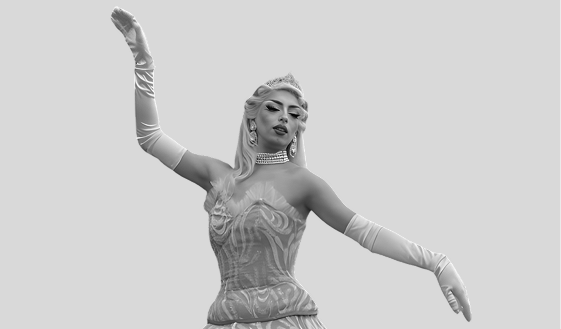
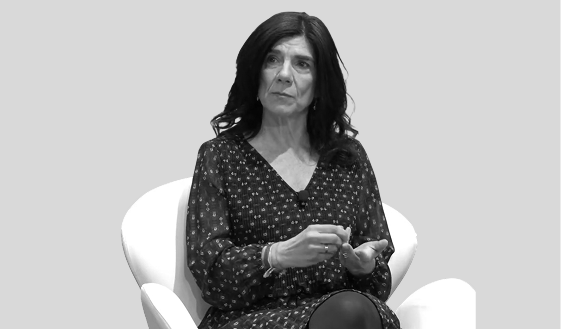
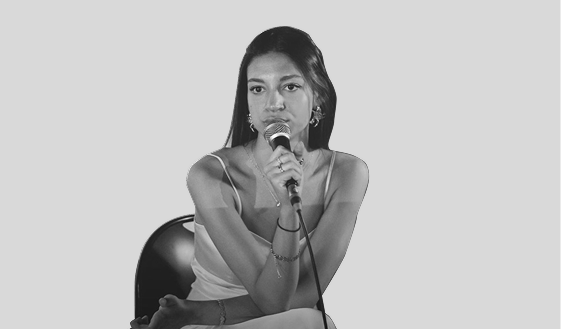
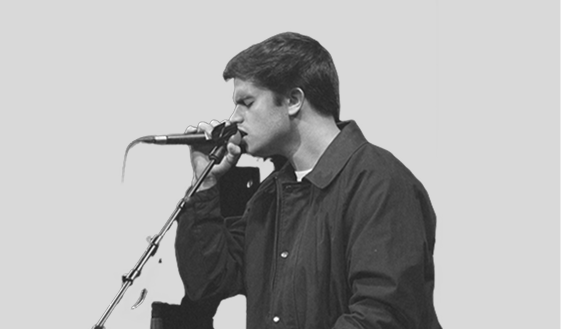
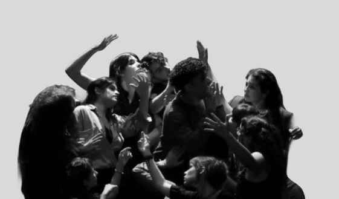
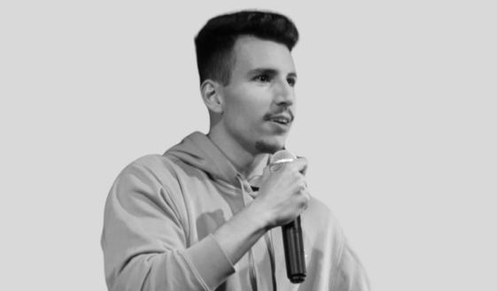
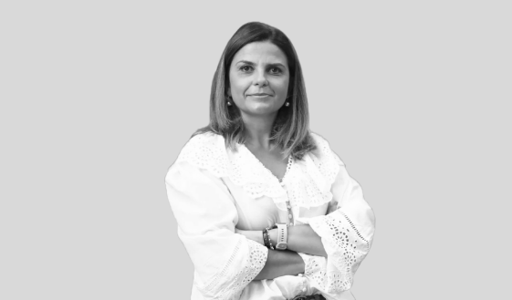

ORADORES
Nesta edição, os oradores transformam o Contratempo num palco de ideias e novas perspetivas.
-
5
ORADORES -
7
PERFORMANCES - IDEIAS
ORADORES

Sincera Mente iniciou a sua carreira artística em 2009, construindo uma presença forte no humor, canto, dança e performance. Destaca-se pela expressividade no palco e uma presença magnética que mistura comédia, improviso e interação direta com o público. Recentemente estreou o espetáculo “(Vou-te)³”, uma peça criada e encenada por si que rapidamente esgotou em Lisboa, mostrando a sua capacidade de trazer a arte drag para além dos ecrãs e estreá-la em teatros.

Margarida Lima é psicóloga e professora associada na Faculdade de Psicologia e de Ciências da Educação da Universidade de Coimbra, onde desenvolve a sua carreira académica desde 1997. Doutorada em Psicologia do Desenvolvimento, tem dedicado grande parte do seu trabalho ao estudo do desenvolvimento humano ao longo da vida, nas relações interpessoais e na personalidade em diferentes fases da vida, com especial foco no envelhecimento. Com mais de uma centena de artigos científicos publicados, é também autora e coautora de diversas obras sobre envelhecimento e desenvolvimento pessoal, entre as quais, “Posso Participar? – Actividades de desenvolvimento pessoal para pessoas idosas e Envelhecimento(s)”.

Inês Marinho, de 28 anos, é fundadora e presidente da Associação “Não Partilhes”, uma iniciativa dedicada à sensibilização para os riscos associados à partilha de conteúdos íntimos online. Através deste projeto, tem desenvolvido ações de sensibilização e iniciativas educativas dirigidas sobretudo a jovens e comunidades escolares, alertando para as consequências da partilha não consentida de imagens íntimas. O seu trabalho contribui para a prevenção da violência digital e para a promoção de uma maior literacia e responsabilidade no uso do ambiente online.
Filipa Queirós é socióloga, doutorada pela Faculdade de Economia da Universidade de Coimbra e investigadora no Centro de Estudos Sociais (CES). Destaca-se pela análise crítica das tecnologias de vigilância e dos seus impactos sociais, políticos e éticos, sobretudo no contexto da justiça criminal. Desde 2022 que investiga o uso de tecnologias de reconhecimento facial pelas autoridades policiais na Europa.

Duarte Pádua é um jovem cantor, compositor e guitarrista português, natural de São João da Madeira. Desde cedo mostrou interesse pela música, influenciado pela família, e começou a desenvolver o seu talento ainda na adolescência. Ganhou maior visibilidade ao participar no programa The Voice Portugal, onde se destacou pela sua voz e presença em palco. Ao longo do seu percurso, tem lançado vários temas originais, afirmando-se como uma das promessas emergentes da nova geração da música portuguesa.
Inês Gomes é uma jovem artista com ligação a Coimbra e Lisboa, e formação na NOVA FCSH, destaca-se pela sua sensibilidade artística e autenticidade.
Atualmente, desenvolve também trabalho enquanto professora associada a projetos como a Escola dança Rita Grade e a FollowSpot School, contribuindo para a formação e inspiração de novos talentos na área performativa.

O InterDito, grupo de teatro da Faculdade de Psicologia e Ciências da Educação da Universidade de Coimbra, ativo desde 2007, desenvolve criações interventivas que cruzam arte com educação e mudança social. As suas peças destacam-se pela forte aposta na expressão corporal, uso da poesia e da performance como ferramentas de reflexão. Entre propostas recentes, incluem-se Albatroz (2024) e Embodied Poetry (2025).
José Janela é professor de Biologia e Geologia no ensino básico e secundário, em Portalegre, e uma voz ativa na área da educação ambiental em Portugal. Licenciado em Biologia pela Faculdade de Ciências da Universidade do Porto, é também mestre em Cidadania Ambiental e Participação.
Ao longo do seu percurso, tem conciliado o ensino com uma forte intervenção cívica e ambiental, destacando-se na formação de professores e na dinamização de projetos de Educação Ambiental para a Sustentabilidade. Integra a Quercus – Associação Nacional de Conservação da Natureza, onde, no âmbito da Rede de Docentes em Mobilidade, coordena iniciativas que promovem a consciência ecológica e a participação ativa dos cidadãos.
Participa ainda em estruturas consultivas e em comissões de cogestão de áreas protegidas, como o Parque Natural da Serra de São Mamede e o Parque Natural do Tejo Internacional, reforçando o seu compromisso com a conservação da natureza e a cidadania ambiental.
José Luís Pires Laranjeira construiu uma carreira sólida na área da literatura, destacando-se como poeta, ensaísta e professor universitário. Doutorado em Literatura Portuguesa, esteve ligado durante várias décadas à Universidade de Coimbra, onde desenvolveu atividade docente e de investigação, afirmando-se como uma referência no estudo das literaturas africanas de língua portuguesa.
Ao longo do seu percurso, tem conciliado a produção literária com o trabalho académico, publicando obras de poesia, ensaio e crítica. É amplamente reconhecido pelo seu contributo para a divulgação e valorização das literaturas africanas no espaço lusófono, tendo desempenhado um papel importante na sua afirmação no meio académico e cultural.

A maioria das pessoas entra num elevador, diz "bom dia" e segue com a vida. O Costeiro não. O Costeiro faz uma auditoria à micro-expressão do vizinho, convoca uma comissão de inquérito mental para saber o que dizer, e processa gigabytes de dados inúteis até entrar em curto-circuito! Costeiro vê o mundo em 4K Ultra HD + IVA. O seu humor nasce do que acontece na sua própria cabeça: um conflito entre um gajo perfeitamente normal e um cérebro hiper-analítico que não se cala! Com atuações por todo o país, em bares, teatros e eventos corporativos, é co-fundador da CEO Produções, com a qual criou e apresenta diversas noites de comédia em Coimbra! É também criador de um formato inovador de comédia baseado em histórias embaraçosas contadas pelo público – o CTRL+Z.araçosas são contadas por ti.

Sofia Pereira, natural de Coimbra, é uma profissional dedicada à sustentabilidade humana no trabalho. Com formação em Serviço Social e mestrado em Gerontologia, construiu um percurso sólido na área social e na gestão de equipas, tendo também passado pela docência na Universidade de Aveiro. É fundadora do Sowise Time Lab, onde atualmente desenvolve investigação, consultoria e formação, apoiando pessoas e organizações na gestão do tempo, produtividade consciente e desenvolvimento de culturas organizacionais mais humanas e sustentáveis. A sua inclinação a esta área nasceu da realidade que foi observando ao longo dos anos: desgaste, pressão e falta de equilíbrio no trabalho. Este percurso levou-a à presidência do Slow Movement Portugal, um movimento que convida a desacelerar, promovendo formas de viver e trabalhar mais saudáveis.
Vera Margarida Cunha é coach de comunicação e uma presença marcante no desenvolvimento de pessoas e oradores. Construiu um percurso ligado à formação, à comunicação e ao trabalho com pessoas, áreas onde tem feito a diferença ao longo dos anos. Com atenção constante ao detalhe, ajuda os oradores a dar forma às suas ideias, a estruturar mensagens e a ganhar confiança em palco.